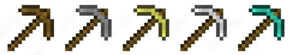
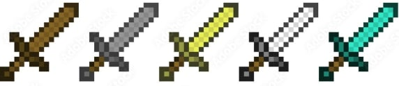
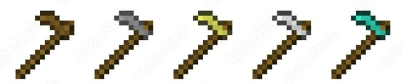
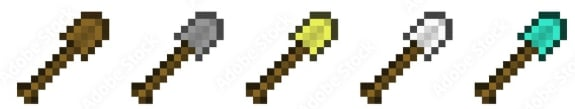
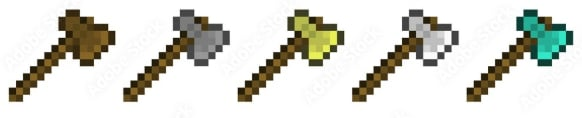

Blocks are what make up the world of Minecraft. They are what you stand on, what you build with, and what you break for resources.
OVERWORLD BLOCKS
Here are some of the common blocks found in the overwolrd dimension.
GRASS BLOCK
STONE
OAK LOG
LEAVES
COBBLESTONE
NETHER BLOCKS
Here are some of the common blocks found in the Nether dimension.
NETHERRACK
GLOWSTONE
CRIMSON STEM & WARPED STEM
SOUL SAND
BASALT
END BLOCKS
Here are some of the common blocks found in the End Dimension
END STONE
OBSIDIAN
PURPUR BLOCKS
CHORUS FRUIT STEM & FLOWER
TOOLS
Tools are what you use to do the various activities in Minecraft. Tools allow you to mine, grow crops, and protect yourself.
PICKAXES
Tools that make mining efficient and allows breaking certain blocks possible. Separated by crafting recipee, durability, and mining speed.
Wooden Pickaxe, Stone Pickaxe, Gold Pickaxe, Iron Pickaxe, Diamond Pickaxe, Netherite Pickaxe

SWORDS
Tools that make you do a larger amount of damage to mobs and players per level by left clicking. Allows you to hit multiple entities in Minecrafts' Java edition.
Wooden Sword, Stone Sword, Golden Sword, Iron Sword, Diamond Sword, Netherite Sword

HOES
Tools that allow you to turn dirt or grass blocks into farmland in which you can place and grow crops in. Increases mining speed on leaves.
Wooden Hoe, Stone Hoe, Golden Hoe, Iron Hoe, Diamond Hoe, Netherite Hoe

SHOVELS
Tools that make mining dirt, sand, gravel, and other similar blocks much faster than pickaxes. Separated by crafting recipee, durability, and mining speed.
Wooden Shovel, Stone Shovel, Gold Shovel, Iron Shovel, Diamond Shovel, Netherite Shovel

AXES
Tools that make chopping down trees and logs much easier. Separated by crafting recipee, durability, and mining speed.
Wooden Shovel, Stone Shovel, Gold Shovel, Iron Shovel, Diamond Shovel, Netherite Shovel

ARMORS
Certain tools that reduce the damage you take once worn. You have four armor slots (Helmet, Chestplate, Leggings, and Boots) where you can put any piece of armor as long as they fit the slot.
Each armor piece fills your armor bar and determines how much dmg they reduce.